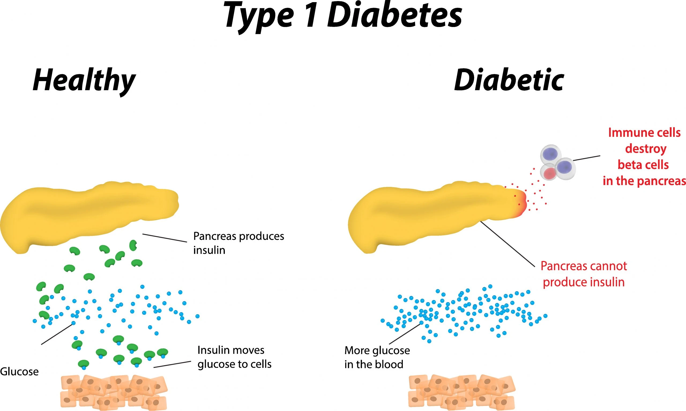

What Is Type 1 Diabetes?

Type 1 Diabetes (T1D) is a chronic autoimmune condition in which the immune system mistakenly attacks the insulin-producing cells in the pancreas. Insulin is a hormone that helps glucose (sugar) enter the body's cells to be used for energy. Without enough insulin, glucose builds up in the bloodstream, causing high blood sugar levels. People living with T1D need insulin therapy to manage their blood sugar and stay healthy.
Navigating T1D
Managing Type 1 Diabetes involves more than just checking blood sugar. Daily care includes taking insulin, counting carbohydrates, monitoring glucose levels, and understanding how food, exercise, stress, and illness can affect blood sugar. Although living with T1D can be challenging, having the right tools, support, and knowledge can make everyday management easier.
Finding Support
Living with Type 1 diabetes can feel very isolating, but leaning on your community, whether it's family, friends, or healthcare professionals, can help ease the weight of managing T1D. Don't stay silent. Always remember that it's okay to ask for help when you need it.
Learn More